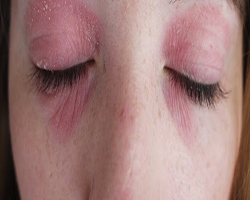

Dry skin on eyelids

1. Castor oil helps dryness of the eyelids. Aloe Vera gel gives immediate relief to eyelid rashes and scabs that are a result of dry skin and flakes. Use fresh gel if it is available or a preparation which has no preservatives.
2. Give warm compresses to the eyes three to four times a day; use a clean wash cloth dipped in warm water – squeeze out excess water and place on both eye areas for 10-15 minutes. Continue at least once a day even when the eyelids are better.
3. Wear a sunscreen and goggles whenever you go out in the sun.
4. Avoid touching the eye area with unwashed hands.
5. Cleanse face and eyes completely of make up before going to bed every night. Apply a moisturizer that suits you and keep pillows and comforters well aired and dusted. Vacuum the house regularly.